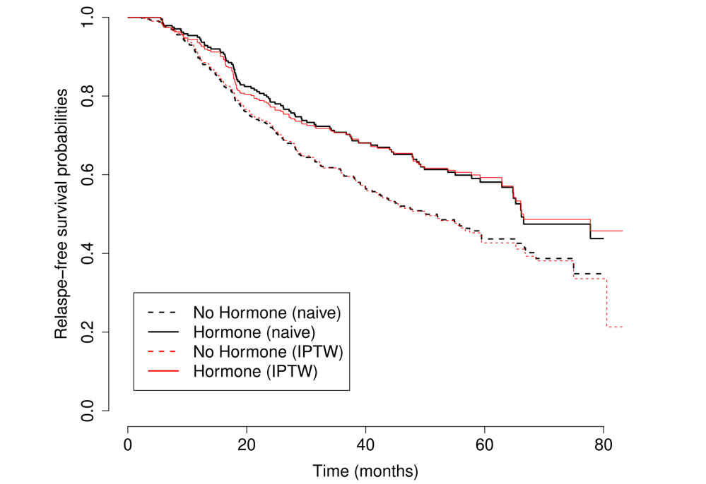

tmp <- ipwpoint(exposure = A, denominator=~ confounders,
family = "binomial", link="logit")Applied Survival Analysis
Chapter 14 - Causal Inference in Survival Analysis
Outline
The counterfactual framework
Inverse weighting and standardization
Estimating causal survival curves
Marginal structural models with time-varying treatment/confounding
\[\newcommand{\d}{{\rm d}}\] \[\newcommand{\T}{{\rm T}}\] \[\newcommand{\dd}{{\rm d}}\] \[\newcommand{\cc}{{\rm c}}\] \[\newcommand{\pr}{{\rm pr}}\] \[\newcommand{\var}{{\rm var}}\] \[\newcommand{\se}{{\rm se}}\] \[\newcommand{\indep}{\perp \!\!\! \perp}\] \[\newcommand{\Pn}{n^{-1}\sum_{i=1}^n}\] \[ \newcommand\mymathop[1]{\mathop{\operatorname{#1}}} \] \[ \newcommand{\Ut}{{n \choose 2}^{-1}\sum_{i<j}\sum} \def\a{{(a)}} \def\b{{(1-a)}} \def\t{{(1)}} \def\c{{(0)}} \def\d{{\rm d}} \def\T{{\rm T}} \]
The Counterfactual Framework
Association vs Causation
- Statistical inference
- Association: test of group difference, correlation, regression
- Causation: informal or irrelevant
- Causal inference: study causal relationships
- Counterfactual framework
- Causal diagrams
- Motivating example: German Breast Cancer Study
- Relapse-free survival (\(T\)) vs hormonal therapy (\(A=1\): yes; \(A=0\): no)
- First assume \(T\) is fully observed (no censoring)
RCT as Gold Standard
- Randomized controlled trial (RCT)
Patients randomly assigned to hormonal vs non-hormonal treatments
Two groups identical (exchangeable) in terms of baseline characteristic
Any between-group difference in relapse-free survival attributable to treatment (no confounding)
- Increase in \(t=5\) years relapse-free survival rate caused by hormonal treatment
\[ \hat\pr(T>t\mid A=1)-\hat\pr(T>t\mid A=0) \]
- (Causal) Hazard ratio under Cox model with binary group as covariate
Possible Confounding
Hormone non-randomized
- Women under hormonal treatment more likely to be post-menopausal than non-treatment (76.0% vs 47.5%)
- Difference in RFS \(\to\) treatment or menopause?
- Confounder: menopausal status
Traditional Methods
- Adjustment for confounding
- Log-rank test stratified by menopausal status (Ch. 3)
- Cox regression with menopausal status as a covariate (Ch. 4; conditional hazard ratio)
- Neither provides a population-level causal effect size of hormone treatment like that derived from an RCT
- Goal
- Drawing causal inference in an RCT-like setting, even with observational data
Counterfactual Framework
- Potential outcomes
- Each subject has two potential outcomes \(T^{(a)}\) \((a=1, 0)\)
- \(T^{(1)}\): had the subject been assigned to treatment
- \(T^{(0)}\): had the subject been assigned to control
- Each subject has two potential outcomes \(T^{(a)}\) \((a=1, 0)\)
- Causal estimand
- Any contrast in distribution between \(T^{(1)}\) vs \(T^{(0)}\)
- Example
- Survival probability: \(\pr(T^{(1)}>t)-\pr(T^{(0)}>t)\)
- RMST: \(E(T^{(1)}\wedge t) - E(T^{(0)}\wedge t)\)
Exchangeability Assumption
- Observed outcome
- \(A = 1, 0\): actually assigned group \[T=AT^{(1)}+(1-A)T^{(0)}\,\,\,\, (\rm consistency)\]
- Assumptions
- Complete randomization \(T^{(a)}\indep A,\hspace{5mm}a=1, 0\)
- Too strong, typically not satisfied
- Conditional exchangeability \[\begin{equation}\label{eq:causal:cond_exch}
T^{(a)}\indep A \mid W,\hspace{5mm} a=1, 0
\end{equation}\]
- Assignment independent of potential outcome given confounders \(W\)
- All confounders are captured in \(W\)
- Complete randomization \(T^{(a)}\indep A,\hspace{5mm}a=1, 0\)
Causal Diagrams
- Directed Acyclic Graph
IPTW & Standardization
Estimand
- Observed data (\(T_i\) fully observed) \[(T_i, A_i, W_i),\,\,\,\, i=1,\ldots, n\]
- Two classes of methods
- Inverse probability treatment weighting (IPTW)
- Standardization
- Causal estimand \[\begin{equation*} S_a(t)=\pr(T^{(a)}>t) \end{equation*}\]
Propensity Score
- Selection bias \[
\text{Naive estimator:}\quad \hat S_a^{\rm naive}(t)=\frac{\sum_{i=1}^nI(A_i=a, T_i>t)}{\sum_{i=1}^nI(A_i = a)}
\]
- \((Y\mid A = 1)\) and \((Y\mid A = 0)\) non-representative of general population
- Propensity score \[
\pi_a(W)=\pr(A=a\mid W)
\]
- Probability of entering treatment \(a\)
- General population \(\stackrel{\pi_a(W)}{\rightleftarrows}\) Group \(a\)
IPTW
- Re-constitute general population
- Inverse weighting: Group \(a\) \(\stackrel{\pi_a(W)^{-1}}{\rightarrow}\) General population \[\begin{equation}\label{eq:causal:ipw_surv} \hat S_a^{\rm IP}(t)=n^{-1}\sum_{i=1}^n\frac{I(A_i=a, T_i>t)}{\pi_a(W_i)} \end{equation}\]
- Unbiased \[\begin{align*} E\left\{\frac{I(A=a, T>t)}{\pi_a(W)}\right\}&=E\left\{\frac{I(A=a, T^{(a)}>t)}{\pi_a(W)}\right\}\\ &=E\left[\pi_a(W)^{-1}E\left\{I(A=a, T^{(a)}>t)\mid W\right\}\right]\\ &=E\left\{\pi_a(W)^{-1}\pr(A=a\mid W)\pr(T^{(a)}>t\mid W)\right\}\\ &=E\left\{\pr(T^{(a)}>t\mid W)\right\}\\ &=S_a(t) \end{align*}\]
Estimate Propensity Score
- \(\pi_a(W)\) unknown unless by design
- Estimate \(\hat\pi_a(\cdot)\) using \[ (A_i, W_i),\,\,\ i=1,\ldots,n \]
- Logistic regression/machine learning classification
- IPTW estimator
- Plug in \(\hat\pi_a(W_i)\) \[\begin{equation} \hat S_a^{\rm IP}(t)=n^{-1}\sum_{i=1}^n\frac{I(A_i=a, T_i>t)}{\hat\pi_a(W_i)} \end{equation}\]
- Variance estimation needs to account for randomness in \(\hat\pi_a(\cdot)\)
Standardization
- Model outcome vs confounder
- Instead of treatment vs confounder \[ \hat S_a(t\mid W)= \hat\pr(T^{(a)}>t\mid W) \]
- E.g., Cox model based on \[ \{(T_i, W_i): A_i=a, i=1,\ldots, n\} \]
- \((T\mid A =a, W) = (T^{(a)}\mid A =a, W) = (T^{(a)}\mid W)\) (conditional exchangeability)
- Standardized estimator
- Average across population: \(\hat S_a^{\rm reg}(t)=n^{-1}\sum_{i=1}^n\hat S_a(t\mid W_i)\)
IPTW vs Standardization
- Modeling target
- IPTW: treatment vs confounder
- Standardization: outcome vs confounder

- Properties
- Nonparametric setting (categorical confounder): \(\hat S_a^{\rm IP}(t)=\hat S_a^{\rm reg}(t)\)
- Doubly robust estimator: valid when either model is true, efficient when both are true
Estimating Causal Survival Curves
Dealing with Censored Data
- In presence of censoring
- IPTW (+ IPCW)
- Standardardization (adjust for cenosring)
- Observed data \((X, \delta, A, W)\)
- \(X=T\wedge C\), \(\delta = I(T\leq C)\), \(C\): censoring time
- Two levels of coarsening
- \(T^{(a)}\to T\): treatment assignment
- \(T\to (X, \delta)\): Censoring
Assumptions about Censoring
- Two types of assumption
- Censoring depends on confounder (general) \[\begin{equation}\label{eq:causal:indep_cens1} T\indep C\mid (A, W) \end{equation}\]
- Censoring not dependent on confounder \[\begin{equation}\label{eq:causal:indep_cens2} T\indep C\mid A \end{equation}\]

IPCW
- General assumption \((W\to C)\)
- Adjust for selection bias by censoring
- Inverse probability treatment weighting (IPTW) + Inverse probability censoring weighting (IPCW)
- Censoring weight
- \(G_a(t\mid W)=\pr(C\geq t\mid A=a, W)\)
- E.g., Cox model fit on \[ (X_i, 1-\delta_i, W_i)\,\,\,\, i=1,\ldots, n \] with \(C_i\) as outcome
Inverse Weighting
- Selection probability
- In group \(a\) and not censored by \(t\): \(\pi_a(W)G_a(t\mid W)\)
- Inverse weight \[ \hat w_{ai}(t)=\frac{I(A_i=a)}{\hat\pi_a(W_i)\hat G_a(t\mid W_i)} \]
- IPT(C)W-adjusted KM estimator
- \(N_i(t)=I(X_i\leq t,\delta_i=1)\) \[\begin{equation}\label{eq:causal_ipcw} \hat S_a^{\rm IP}(t)=\prod_{0\leq u\leq t}\left\{1-\frac{\sum_{i=1}^n \hat w_{ai}(u)\dd N_i(u)}{\sum_{i=1}^n \hat w_{ai}(u)I(X_i\geq u)}\right\} \end{equation}\]
- If \((T\indep C)\mid A\), then \(\hat G_a(t\mid W_i)\equiv 1\)
Causal Cox Model
- Marginal structural model
- \(\lambda_a(t)\): hazard function of \(T^{(a)}\) \[\begin{equation}\label{eq:causal:msm_cox} \lambda_a(t)=\exp(a\beta)\lambda_0(t) \end{equation}\]
- IPT(C)W-adjusted partial likelihood score
- \(\hat w_i(t)=\{\hat\pi_{A_i}(W_i)\hat G_{A_i}(t\mid W_i)\}^{-1}\) \[\begin{equation}\label{eq:causal:score} n^{-1}\sum_{i=1}^n\int_0^\infty\left\{A_i-\frac{\sum_{j=1}^nA_j\hat w_{j}(t) I(X_j\geq t)\exp(A_j\beta)} {\sum_{j=1}^n \hat w_{j}(t) I(X_j\geq t)\exp(A_j\beta)}\right\}\hat w_{i}(t)\dd N_i(t)=0 \end{equation}\]
- \(\exp(\beta)\): causal hazard ratio
Standardization Approach
- Two-steps
- Outcome (censored) vs confounder \[S_a(t\mid W)=\pr(T^{(a)}>t\mid W)\]
- Average \(\hat S_a^{\rm reg}(t)=n^{-1}\sum_{i=1}^n\hat S_a(t\mid W_i)\)
- Standard software
Software: ipw::ipwpoint()
- Basic syntax for computing propensity scores
A: A;confounders: Wfamily = "binomial", link="logit": logistic regression for binary \(A\)
Output
tmp$ipw.weights: \(n\)-Vector of inverse weights- Plug in
survfit()andcoxph()
# IPTW-adjusted KM obj <- survfit(Surv(time,status) ~ A, weights = tmp$ipw.weights)
GBC: An Example
- German Breast Cancer study
- \(A\): hormone treatment (1) vs no treatment (0)
- \(T\): relapse-free survival time
- \(ùëä\): confounders (menopausal status, tumor size, tumor grade, progesterone and estrogen receptor levels)
- Assumption about censoring \[(T\indep C)\mid A\]
- Only IPTW needed (no IPCW)
GBC: Coding & Results
- IPTW-adjusted vs unweighted KM
Causal hazard ratio: 69.5% (\(p\)-value 0.006)
Standard error may be incorrect due to randomness in estimated weights
- Bootstrap
# estimate propensity score tmp <- ipwpoint(exposure = A, family="binomial",link="logit", denominator =~ meno + size + factor(grade) + nodes + prog + estrg, data=data.CE) # IPTW-adjusted KM obj <- survfit(Surv(time, status) ~ A, weights = tmp$ipw.weights, data = data.CE) # IPTW Cox model (essentially a marginal structural Cox model) coxph(Surv(time,status) ~ A, weights=tmp$ipw.weights, data=data.CE) #> coef exp(coef) se(coef) robust se z p #> A -0.36947 0.69110 0.08318 0.13632 -2.71 0.00672
GBC: IPTW vs Naive
- Confounding not obvious

Marginal Structural Models (MSM)
Point Treatment
- Causal inference
- Relationship between \(T^{(a)}\) vs \(a\), rather than \(T\) vs \(A\)
- Marginal structural models
- Definition: a model for \(T^{(a)}\) against \(a\), possibly adjusting for baseline covariates \(V\subset W\)
- Marginal: no need to condition on full \(W\) as covariates
- Structural: treatment is \(a\) (as in RCT), not observed \(A\)
- Simplest case: \(V=\emptyset\) \[\begin{equation} \lambda_a(t)=\exp(a\beta)\lambda_0(t) \end{equation}\]
- Most useful in time-varying treatment/confounding
Marginal Structural Cox Model
- General form
- \(\lambda_a(t\mid V)\): conditional hazard of \(T^{(a)}\) given \(V\) \[\begin{equation}\label{eq:causal:msm_cox1} \lambda_a(t\mid V)=\exp(\beta a+\gamma^{\rm T}V)\lambda_0(t) \end{equation}\]
- \(\exp(\beta)\): causal hazard ratio for treatment vs control adjusting for \(V\)
- Different from the causal HR conditional on all of \(W\)
- Treatment \(\times\) covariate interaction \[\begin{equation}\label{eq:causal:msm_cox2} \lambda_a(t\mid V)=\exp(\beta a+\gamma^{\rm T}V+a\eta^{\rm T}V)\lambda_0(t) \end{equation}\]
Fitting MSM
General assumption: \(T\indep C\mid (A, W)\)
Weight construction
- Standard IPTW-IPCW weights \[w_i(t)=\frac{1}{\pi_{A_i}(W_i)G_{A_i}(t\mid W_i)}\]
- Stablized IPTW-IPCW weights \[\begin{equation}\label{eq:causal:swights}
w^{\rm s}_i(t)=\frac{\pi_{A_i}(V_i)G_{A_i}(t\mid V_i)}{\pi_{A_i}(W_i)G_{A_i}(t\mid W_i)},
\end{equation}\]
- \(\pi_{a}(V)=\pr(A=a\mid V)\) and \(G_{a}(t\mid V)=\pr(C>t\mid A=a, V)\)
- Set \(G_{a}(t\mid V)=G_{a}(t\mid W)\equiv 1\) if \(W\not\to C\)
Weighted Partial-Likelihood Score
- Using stablized weights \[\begin{equation}\label{eq:causal:msm_ee}
n^{-1}\sum_{i=1}^n\int_0^\infty\left\{Z_i-\frac{\sum_{j=1}^nZ_j\hat w^{\rm s}_j(t) I(X_j\geq t)\exp(\zeta^{\rm T}Z_j)}
{\sum_{j=1}^n \hat w^{\rm s}_j(t) I(X_j\geq t)\exp(\zeta^{\rm T}Z_j)}\right\} \hat w^{\rm s}_i(t)\dd N_i(t)=0
\end{equation}\]
- \(\hat w^{\rm s}_i(t)\): an estimate of \(w^{\rm s}_i(t)\)
- \(Z_i=(A_i, V_i^{\rm T})^{\rm T}\) and \(\zeta=(\beta,\gamma^{\rm T})^{\rm T}\)
Time-Varying Treatment
- MSM
- Adjust for confounders \(\not\leftrightarrow\) adjust for covariates
- Conditioning on covariate changes meaning of covariate effects
- Most useful in time-varying treatment/confounding
- Mediator of previous treatment \(\leftrightarrow\) Confounder for current/future treatment
- Previous anti-retroviral treatment \(\to\) current CD4 count \(\stackrel{\rm prescribe}{\rightarrow}\) ART
- Conditioning on CD4 \(\to\) corrects confounding for current trt, blocks causal path of previous trt
Notation & DAG
- Notation
- \(a(t)\): hypothetical treatment at \(t\); \(A(t)\): observed treatment at \(t\)
- \(W(t)\): possible confounders at \(t\)
- Discretization
- \(0=t_0<t_1<\cdots<t_m\): time points
- \(A_{\cdot j}=A(t_j)\) and \(W_{\cdot j}=W(t_j)\)
- \(\overline A_{\cdot j}=\{A_{\cdot 0},\ldots, A_{\cdot j}\}\); \(\overline W_{\cdot j}=\{W_{\cdot 0},\ldots, W_{\cdot j}\}\); \(V\subset W_{\cdot 0}\): baseline covariates

MSM for Time-Varying Treatment
- Modeling target
- Treatment path (sequence): \(\overline a(t)=\{a(u): 0\leq u\leq t\}\)
- Outcome: \(T^{(\overline a)}\) = potential outcome under treatment path \(\overline a(\infty)\) against \(a(\cdot)\)
- Model specification
- \(\lambda_{\overline a}(t\mid V)\): conditional hazard of \(T^{(\overline a)}\) given \(V\) \[\begin{equation}\label{eq:causal:msm_tv} \lambda_{\overline a}(t\mid V)=\exp\{\beta a(t)+\gamma^{\rm T}V\} \end{equation}\]
- Cox model with external (why?) time-varying covariate \(a(t)\)
- Replace \(a(t)\) by any summary of \(\overline a(t)\), e.g., total time on treatment
Sequential Randomization Assumption
- Sequential conditional exchangeability
- An time-varying version of CE \[\begin{equation}\label{eq:causal:cond_exch1} T^{(\overline a)}\indep A_{\cdot j}\mid (\overline A_{\cdot, j-1}, \overline W_{\cdot j}) \hspace{2mm}j=1,\ldots, m. \end{equation}\]
- Treatment assignment random given previous treatments and current/previous confounders (biomarkers)
Longitudinal Weights
- At time \(t_j\)
- Propensity scores/non-censoring hazards \[\begin{align} \pi_k(t_j; \overline A_{\cdot, j-1}, V)&=\pr(A_{\cdot j}=k\mid \overline A_{\cdot, j-1}, V)\\ \pi_k(t_j; \overline A_{\cdot, j-1}, \overline W_{\cdot j})&=\pr(A_{\cdot j}=k\mid \overline A_{\cdot, j-1}, \overline W_{\cdot j})\\ \lambda_C(t_j\mid \overline A_{\cdot, j-1}, V)&=\pr(C>t_j \mid C>t_{j-1}, \overline A_{\cdot, j-1}, V)\\ \lambda_C(t_j\mid \overline A_{\cdot, j-1}, \overline W_{\cdot j})&=\pr(C>t_j \mid C>t_{j-1}, \overline A_{\cdot, j-1}, \overline W_{\cdot j}) \end{align}\]
- Stablized weight at \(t\)
- IPTW + IPCW \[\begin{equation}\label{eq:causal:swights_tv} w^{\rm s}(t)=\prod_{t_j\leq t}\frac{\pi_{A_{\cdot, j}}(t_j; \overline A_{\cdot, j-1}, V)\lambda_C(t_j\mid \overline A_{\cdot, j-1}, V)} {\pi_{A_{\cdot, j}}(t_j; \overline A_{\cdot, j-1}, \overline W_{\cdot j})\lambda_C(t_j\mid \overline A_{\cdot, j-1}, \overline W_{\cdot j})} \end{equation}\]
Weighted Partial-Likelihood Score
- Using stablized weights
- \(\hat w^{\rm s}_i(t)\): estimated \(w^{\rm s}(t)\) for \(i\)th subject \[\begin{align*}
n^{-1}\sum_{i=1}^n\int_0^\infty\left\{Z_i(t)-\frac{\sum_{j=1}^n\hat w^{\rm s}_j(t) Z_j(t) I(X_j\geq t)\exp\{\zeta^{\rm T}Z_j(t)\}}
{\sum_{j=1}^n \hat w^{\rm s}_j(t) I(X_j\geq t)\exp\{\zeta^{\rm T}Z_j(t)\}}\right\} \hat w^{\rm s}_i(t)\dd N_i(t)
\end{align*}\]
- \(Z_i(t)=\{A_i(t), V_i^{\rm T})\}^{\rm T}\); \(\zeta=(\beta,\gamma^{\rm T})^{\rm T}\)
- \(\hat w^{\rm s}_i(t)\): estimated \(w^{\rm s}(t)\) for \(i\)th subject \[\begin{align*}
n^{-1}\sum_{i=1}^n\int_0^\infty\left\{Z_i(t)-\frac{\sum_{j=1}^n\hat w^{\rm s}_j(t) Z_j(t) I(X_j\geq t)\exp\{\zeta^{\rm T}Z_j(t)\}}
{\sum_{j=1}^n \hat w^{\rm s}_j(t) I(X_j\geq t)\exp\{\zeta^{\rm T}Z_j(t)\}}\right\} \hat w^{\rm s}_i(t)\dd N_i(t)
\end{align*}\]
Software: ipw::ipwtm() (I)
- Input data (long format)
head(haartdat)
# patient tstart fuptime haartind event sex age cd4 endtime dropout
# 1 -100 0 0 0 1 22 23.83275 2900 0
# 1 0 100 0 0 1 22 25.59297 2900 0
# 1 100 200 0 0 1 22 23.47339 2900 0
# 1 200 300 0 0 1 22 24.16609 2900 0
# 1 300 400 0 0 1 22 23.23790 2900 0
# 1 400 500 0 0 1 22 24.85961 2900 0
# ...Software: ipw::ipwtm() (II)
- Basic syntax for IPTW weights
trt: treatment indicator;V: baseline covariates \(V\);W: (time-varying) confounders;(tstart, timevar): start/stop times;id: subject identifier
# treatment changes only once, from 0 to 1,
# e.g., initiation of ART
iptw <- ipwtm(exposure = trt, family = "survival",
numerator =~ V, denominator =~ W, id,
tstart, timevar, type = "first")
# treatment binary and changes arbitrarily
iptw <- ipwtm(exposure = trt, family = "binomial",
link="logit", numerator =~ V, denominator =~ W,
id, type = "all")Software: ipw::ipwtm() (III)
- IPTW output:
iptw$ipw.weights: \[ \prod_{t_j\leq t}\frac{\pi_{A_{\cdot, j}}(t_j; \overline A_{\cdot, j-1}, V)} {\pi_{A_{\cdot, j}}(t_j; \overline A_{\cdot, j-1}, \overline W_{\cdot j})} \]
- Basic syntax for IPCW weights
censor = 1: censored,0: not censored
ipcw <- ipwtm(exposure = censor, family = "survival",
numerator = ~V, denominator = ~W, id,
tstart, timevar, type = "first")Software: ipw::ipwtm() (III)
- IPCW output:
ipcw$ipw.weights: \[ \prod_{t_j\leq t}\frac{\lambda_C(t_j\mid \overline A_{\cdot, j-1}, V)} {\lambda_C(t_j\mid \overline A_{\cdot, j-1}, \overline W_{\cdot j})} \]
- Fit MSM using combined weights
iptw$ipw.weights * ipcw$ipw.weights: \(\hat w^{\rm s}_i(t)\)
obj <- coxph(Surv(tstart, timevar, status) ~ trt + V
+ cluster(id),
weights = iptw$ipw.weights * ipcw$ipw.weights)An HIV Study
- Study infomation
- Population: 1200 HIV-infected patients (van der Wal and Geskus, 2011) followed until death or censoring
- Treatment: Some initiate highly active anti-retroviral therapy (HAART) during follow-up, as determined by patient CD4 cell count
- \(A=\)
haartind; \(V=\)sex, age; \(W=\)sex, age, cd4
- \(A=\)
head(haartdat)
# patient tstart fuptime haartind event sex age cd4 endtime dropout
# 1 -100 0 0 0 1 22 23.83275 2900 0
# 1 0 100 0 0 1 22 25.59297 2900 0
# 1 100 200 0 0 1 22 23.47339 2900 0
# ...Fit MSM for HAART
- Compute weights and fit model
# Compute the IPTW weights
iptw <- ipwtm(exposure = haartind, family = "survival",
numerator = ~ sex + age, denominator = ~ cd4 + sex +
age, id = patient, tstart = tstart, timevar = fuptime,
type = "first", data = haartdat)
# Compute the IPCW weights
ipcw <- ipwtm(exposure = dropout, family = "survival",
numerator = ~ sex + age, denominator = ~ cd4 + sex +
age, id = patient, tstart = tstart, timevar = fuptime,
type = "first", data = haartdat)
# Fit IPTW/IPCW marginal structural Cox model
obj <- coxph(Surv(tstart, fuptime, event) ~ haartind + sex +
age + cluster(patient), data = haartdat,
weights = iptw$ipw.weights * ipcw$ipw.weights)Inference
- Results
- HAART initiation reduces the mortality risk by \(1 – 0.382 = 61.8\%\)
- Cox model without adjusting for CD4 confounding \(\to\) only \(46.1\%\) reduction
- Patients who initiate HAART tend to have poor prognosis
summary(obj)
#> coef exp(coef) se(coef) robust se z Pr(>|z|)
#> haartind -0.96171 0.38224 0.43017 0.45148 -2.130 0.033160 *
#> sex 0.09761 1.10253 0.43770 0.45351 0.215 0.829592
#> age 0.06400 1.06609 0.01414 0.01678 3.815 0.000136 ***
Exercise
What happens if you adjust for CD4 cell count as a time-varying covariate?
Conclusion
Notes (I)
- Counterfactual framework
- Causal inference for statistics, social, and biomedical sciences (Imbens and Rubin, 2015)
- Point/time-varying treatment/confounding
- Causal inference: what if (Hernan and Robins, 2024)
- Directed acyclic graph (DAG) approach
- Causality: models, reasoning, and inference (Pearl, 2011)
Notes (II)
- Texts

Summary (I)
- Counterfactual framework
- Potential outcomes \(T^{(a)}\) \((a=1, 0)\)- mimicking RCT
- Conditional exchangeability
- All confounders captured in \(W\)
- All confounders captured in \(W\)
- Methods
- Inverse probability treatment weighting (IPTW;
ipwR-package) - Standardization
- Inverse probability treatment weighting (IPTW;
Summary (II)
- Marginal structural model (MSM) \[\begin{equation}
\lambda_{\overline a}(t\mid V)=\exp\{\beta a(t)+\gamma^{\rm T}V\}
\end{equation}\]
- IPTW/IPCW computed by
ipw::ipwtm()and fed intosurvival::coxph()
- IPTW/IPCW computed by
HW6 (Due April 30)
- Problem 12.11
- Problem 13.13
- Problem 14.10
- (Extra credit) Problem 14.9